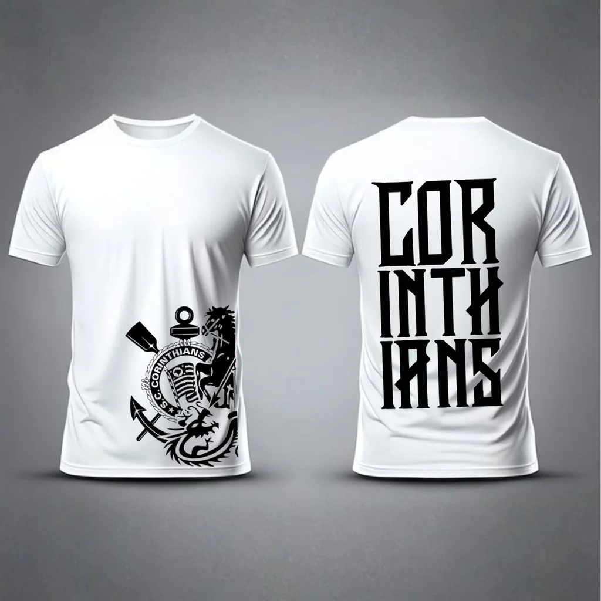

ARQUIBANCADA
FIEL.
Mais que produtos. Ideias, histórias e guias para quem vive o Corinthians dentro e fora da arquibancada.
EXPLORAR ARTIGOS ↗PAIXÃO TAMBÉM
É CONHECIMENTO.
Notícias do Corinthians, visão de torcedor, guias de compra e cuidados com as peças. As condições de cada anúncio são confirmadas na plataforma parceira.
LEITURAS DA FIEL.
RESPOSTAS.22 OUT / 2026
Gaviões da Fiel vai ao CT cobrar Corinthians em meio à crise
Representantes da organizada cobram jogadores e diretoria após sequência sem vitórias no Brasileirão.
Marcelo Paz deixa o Corinthians: pressão da Fiel, crise no futebol e um novo desafio para o Timão
Marcelo Paz deixa o Corinthians após pressão da torcida e crise no Brasileirão. Veja os motivos e quem assume o futebol do Timão.
Como escolher o tamanho certo de uma camisa de futebol
Aprenda a medir uma camiseta, comparar tabelas e escolher o caimento certo de uma camisa de futebol antes de comprar online.
 02 / FIEL
02 / FIELCamisas retrô do Corinthians: o que observar antes de comprar
Guia para escolher camisas retrô do Corinthians: referências históricas, escudos, acabamento, tamanhos, autenticidade e licenciamento.
Presentes para corinthianos: ideias além da camisa de futebol
Sugestões de presentes para corinthianos: copos, acessórios de churrasco, bandeiras, roupas e itens para diferentes perfis.

04 / FIELComo lavar e guardar camisas de futebol sem danificar as estampas
Dicas para lavar, secar, passar e guardar camisas de futebol e camisetas estampadas respeitando a etiqueta de cuidados.
CONHEÇA A SELEÇÃO.
Veja roupas, peças de inspiração retrô e acessórios na nossa curadoria independente.